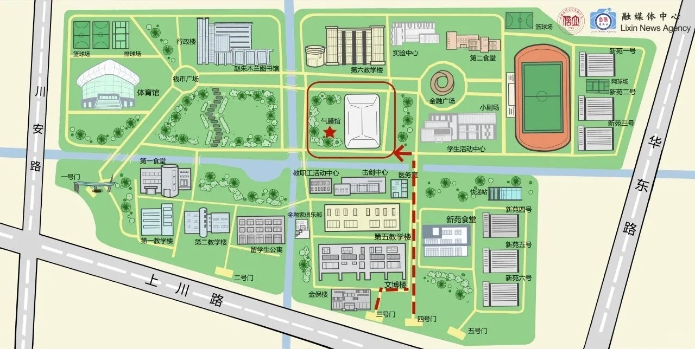
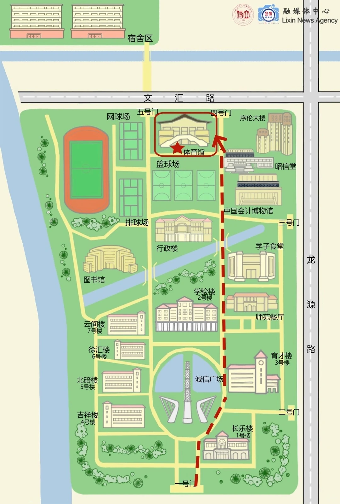

立信校园经验知识库
这里汇总了校区、宿舍、选课、考试、缴费、报到、校车、图书馆、转专业、插班生等高频经验内容，更适合新生先快速建立整体认知。
查看后台化知识条目
Campus Survival Guide
这不是学校官方发布页，而是一个把校车、地图、食堂、报到、选课和近期提醒整理到一起的校园入口。 先帮你快速判断“这条信息跟我有没有关系”，再跳回官方原文核对细节。
Fast Entry
第一步不是“阅读所有信息”，而是先找到和当前任务最相关的入口。
Newcomer Tutorials
这里专门放“怎么做”的内容，比如怎么充电费、怎么连 VPN、怎么绑定校园服务。后续可在后台自定义新增。
这里汇总了校区、宿舍、选课、考试、缴费、报到、校车、图书馆、转专业、插班生等高频经验内容，更适合新生先快速建立整体认知。
查看后台化知识条目先看流程顺序、再看材料与时间，适合刚入学时快速定位。
生活入门把两校区出行、校内路线、食堂与快递这些最容易迷路的内容放一起看。
进阶使用适合大一后半段到高年级继续看，把课程与制度类经验集中整理。
Campus Maps
地图来自现有资料整理，仅作辅助定位，请以现场标识和学校安排为准。


如果你后面还想继续增强地图，这一块后续可以接入更详细的楼宇标点、生活服务点位，甚至校区内的自定义交互地图。
Daily Campus
这一层只放高频、可操作、同学最容易反复查的内容。
Academic Calendar
这一块的重点不是背内容，而是快速判断自己现在应该做哪一步。
不同年级、学院、校区和身份状态，时间安排通常不一样，先分流比先阅读所有内容更重要。
不要把“完成其中一项”误当成“全部流程结束”，迎新常见问题都出在这里。
真正关键的往往不在摘要，而在通知附件或说明细则里，所以这里始终建议回原文确认。
Course Radar
这里更适合沉淀经验，而不是只堆通知，所以后续可以和“学长学姐说”形成联动。
你已经有学长学姐说的后端体系了，后面完全可以把课程经验拆成单独的可管理模块。
先看学长学姐说Campus Feed